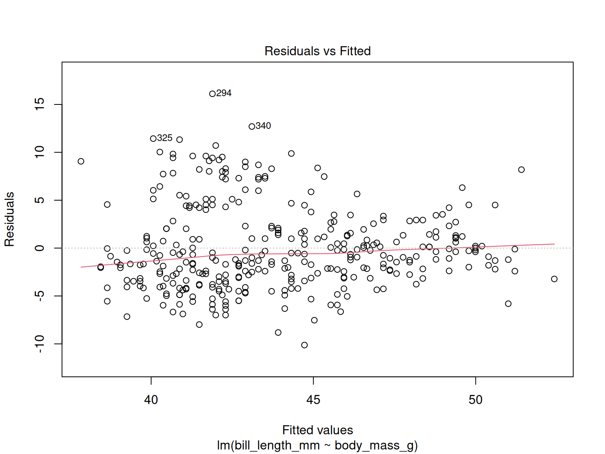
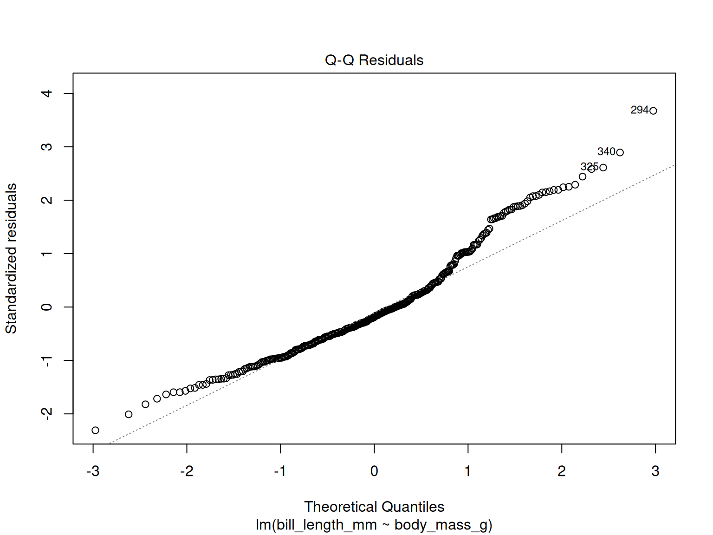
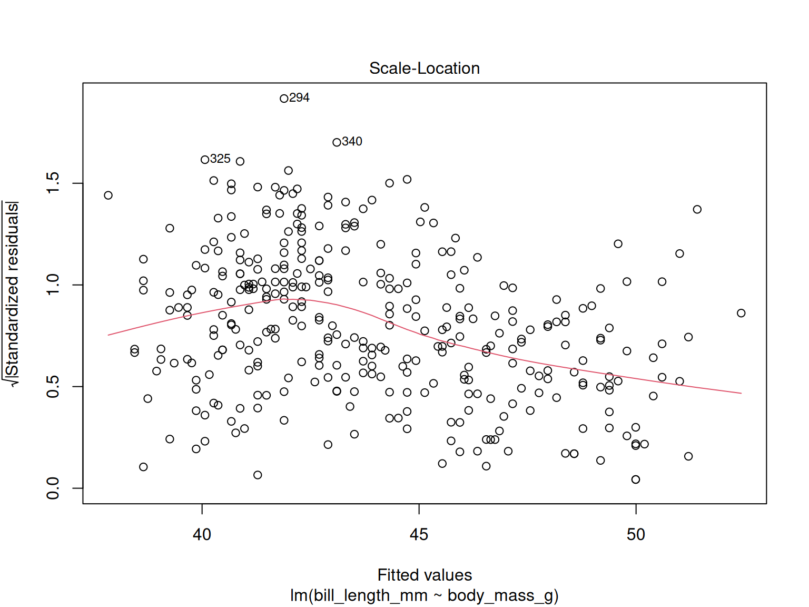
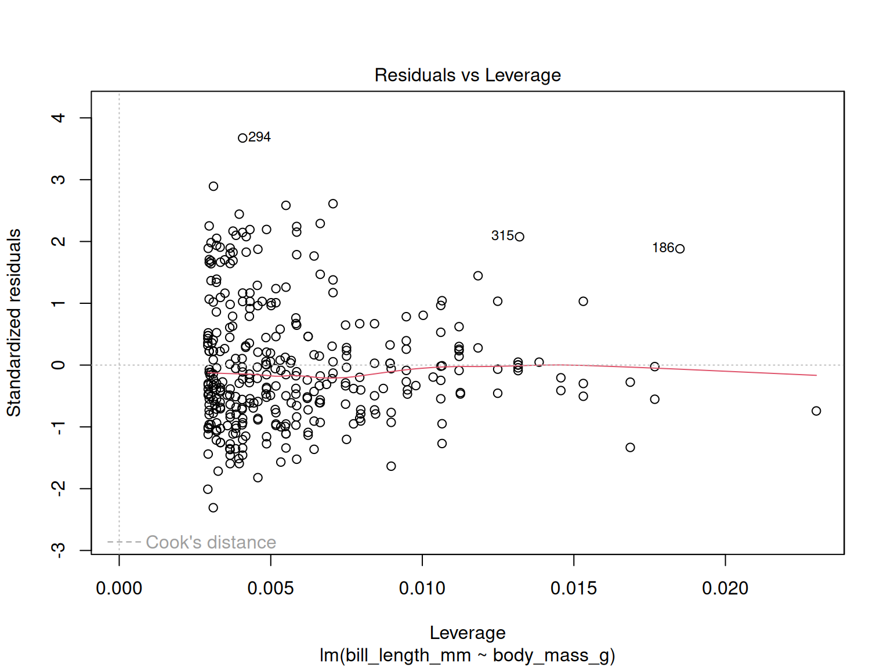

?DistributionsBasic Statistics in R
RAdelaide 2025
Dr Stevie Pederson
Black Ochre Data Labs
Telethon Kids Institute
Telethon Kids Institute
July 9, 2025
Statistics in R
Introduction
Rhas it’s origins as a statistical analysis language (i.e.S)- Purpose of this session is NOT to teach statistical theory
- I am a bioinformatician NOT a statistician
- Perform simple analyses in R
- Up to you to know what you’re doing
- Or talk to your usual statisticians & collaborators
Distributions
Rcomes with nearly every distribution- Standard syntax for accessing each
Distributions
| Distribution | Density | Area Under Curve | Quantile | Random |
|---|---|---|---|---|
| Normal | dnorm() |
pnorm() |
qnorm() |
rnorm() |
| T | dt() |
pt() |
qt() |
rt() |
| Uniform | dunif() |
punif() |
qunif() |
runif() |
| Exponential | dexp() |
pexp() |
qexp() |
rexp() |
| \(\chi^2\) | dchisq() |
pchisq() |
qchisq() |
rchisq() |
| Binomial | dbinom() |
pbinom() |
qbinom() |
rbinom() |
| Poisson | dpois() |
ppois() |
qpois() |
rpois() |
Distributions
- Also Beta, \(\Gamma\), Log-Normal, F, Geometric, Cauchy, Hypergeometric etc…
Distributions


The T Distribution

Tests For Continuous Data
Data For This Session
We’ll use the pigs dataset from earlier
Data For This Session

Pop Quiz
Can anyone define a p-value?
- A p-value is the probability of observing a test statistic at least as extreme as the one observed, assuming the null hypothesis is true.
- In plain English, assuming there’s nothing interesting to see here, how likely are we to observe our result, or one even more extreme
- A p-value of 0.05 \(\implies\) about 1 in 20 times we’ll see something like this in a random sample
t-tests
- Assumes normally distributed data
- \(t\)-tests always test \(H_0\) Vs \(H_A\)
- For data with exactly two groups
t-tests
When comparing the means of two vectors
\[ H_0: \mu_{1} = \mu_{2} \\ H_A: \mu_{1} \neq \mu_{2} \]
We could use two vectors (i.e. x & y)
Is This a Paired Test?
No
t-tests
- An alternative is the
Rformula method:len~supp- Length is a response variable
- Supplement is the predictor
- Can only use one predictor for a T-test
- Otherwise it’s linear regression
Did this give the same results?
t-tests
- Do we think the variance is equal between the two groups?
# A tibble: 2 × 2
supp sd
<fct> <dbl>
1 VC 8.27
2 OJ 6.61t-tests
- Now we can assume equal variances
- By default, variances are assumed to be unequal
- If relevant, the confidence interval can also be adjusted
Wilcoxon Tests
- We assumed the above dataset was normally distributed:
What if it’s not?
- Non-parametric equivalent is the Wilcoxon Rank-Sum Test (aka Mann-Whitney)
A Brief Comment
- Both of these are suitable for comparing two groups
- T-tests assume Normally Distributed Data underlies the random sample
- Are robust to some deviation from normality
- Data can sometimes be transformed (e.g.
sqrt(),log()etc)
- The Wilcoxon Rank Sum Test assumes nothing about the underlying distribution
- Much less powerful will small sample sizes
- Highly comparable at n \(\geq\) 30
- The package
coinimplements a range on non-parametric tests
Tests For Categorical Data
\(\chi^2\) Test
- Here we need counts and categories
- Commonly used in Observed Vs Expected
\[ H_0: \text{No association between groups and outcome}\\ H_A: \text{Association between groups and outcome} \]
When we shouldn’t use a \(\chi^2\) test?
When expected cell values are > 5 (Cochran 1954)
\(\chi^2\) Test
Pass Fail
Attended 25 6
Skipped 8 15Fisher’s Exact Test
- \(\chi^2\) tests became popular in the days of the printed tables
- We now have computers
- Fisher’s Exact Test is preferable in the cases of low cell counts
- (Or any other time you feel like it…)
- Same \(H_0\) as the \(\chi^2\) test
- Uses the hypergeometric distribution
Summary of Tests
t.test(),wilcox.test()chisq.test(),fisher.test()
shapiro.test(),bartlett.test()car::leveneTest()- Tests for normality or homogeneity of variance
binomial.test(),poisson.test()kruskal.test(),ks.test()
htest Objects
- All produce objects of class
htest - Is really a
list- Use
names()to see what other values are returned
- Use
htest Objects
[1] "p.value" "conf.int" "estimate" "null.value" "alternative"
[6] "method" "data.name" - There is a function
print.htest()which organises the printout for us
Linear Regression
Linear Regression
We are trying to estimate a line with slope & intercept
\[ y = ax + b \]
Or
\[ y = \beta_0 + \beta_1 x \]
- \(y\) is the response variable
- \(x\) is the predictor variable
- Makes the most intuitive sense when both \(x\) & \(y\) are continuous
Linear Regression
Linear Regression always uses the R formula syntax
y ~ x:ydepends onx- We use the function
lm() - Once we have our model, we can predict \(y\) based on \(x\) values
- We’ll use the penguins dataset for some exploration
Linear Regression
Linear Regression
- Bill length is the response variable (\(y\))
- Body Mass is the predictor variable (\(x\))
Linear Regression
Call:
lm(formula = bill_length_mm ~ body_mass_g, data = penguins)
Residuals:
Min 1Q Median 3Q Max
-10.1251 -3.0434 -0.8089 2.0711 16.1109
Coefficients:
Estimate Std. Error t value Pr(>|t|)
(Intercept) 2.690e+01 1.269e+00 21.19 <2e-16 ***
body_mass_g 4.051e-03 2.967e-04 13.65 <2e-16 ***
---
Signif. codes: 0 '***' 0.001 '**' 0.01 '*' 0.05 '.' 0.1 ' ' 1
Residual standard error: 4.394 on 340 degrees of freedom
(2 observations deleted due to missingness)
Multiple R-squared: 0.3542, Adjusted R-squared: 0.3523
F-statistic: 186.4 on 1 and 340 DF, p-value: < 2.2e-16Linear Regression
- The code used is returned as
Call: - A brief summary of the residuals are returned
- The fitted values are returned in the
Coefficientselement- We have the estimate of the intercept & slope
- The standard error of the estimates
- A t-test testing \(H_0: \beta_i = 0\)
- The p-value for each t-test
- Additional model summary information
- \(R^2\) is the proportion of variance explained by the model
Coefficients
How do we interpret the Intercept?
This is what the bill length would be if a penguin weighed exactly 0
- We’d probably expect this to be zero but they almost never are
- The Intercept is almost always significant
- What does this really tell us about the relationship between bill length and weight?
- Generally focussed on the relationship within the range of observed predictors
- No guaranteed linear relationship outside of this range
Coefficients
How do we interpret the body_mass_g term?
This is how much we would expect the bill length to change for every one unit increase in the predictor
i.e. for every 1\(g\) increase in weight, the bill length would be expected to increase by about 0.0041mm
- The \(t\)-test here is highly relevant
- \(H_0\colon \beta_1 = 0~\) Vs \(~H_A\colon \beta_1 \neq 0\)
- Reject \(H_0 \implies\) there is an association between predictor & response
Linear Regression
- Points never lie exactly on the regression line \(\implies\) Why?
- We’re actually fitting the model
\[ y_i = \beta_0 + \beta_1 x_i + \epsilon_i \]
- \(\beta_0 + \beta_1 x_i\) is the exact line co-ordinate (Intercept + slope*predictor)
- \(\epsilon_i\) is the the vertical difference between the observed value and the fitted value
- Known as a residual
- Defined as \(\epsilon_i \sim \mathcal{N}(0, \sigma)\)
Linear Regression
Linear Regression formally has 4 key assumptions
- Linear relationship between predictor and response
- Mean of residuals is zero across the entire range
- Constant variance across the range of data (homoscedasticity)
- Residuals are normally distributed
- Independence of errors
- Three of these are represented in the definition \(\epsilon_i \sim \mathcal{N}(0, \sigma)\)
Linear Regression
- To check our fitted model, we should check the residuals to ensure \(\epsilon_i \sim \mathcal{N}(0, \sigma)\)
Linear Regression

- Check the zero mean of \(\mathcal{N}(0, \sigma)\)
- Is this assumption satisfied across the range of the data?
Linear Regression

- Check the normality of \(\mathcal{N}(0, \sigma)\)
- The dashed line is the expected line from a normal distribution
- Is this assumption satisfied across the range of the data?
Linear Regression

- Check the constant variance of \(\mathcal{N}(0, \sigma)\)
- Is this assumption satisfied across the range of the data?
Linear Regression

- Checks if any points are exerting excessive ‘leverage’ on the model
- Beyond scope of today
Regression Diagnostic Plots
- All of these figures used base plotting functions
- Stepping through can be frustrating
- Especially when running an automated script
Objects Of Class lm
- The linear model we fitted produced an object of class `lm
Objects Of Class lm
- We can use the list structure to inspect the residuals manually
Objects Of Class lm
- We could even use the Shapiro-Wilk test for normality
Shapiro-Wilk normality test
data: bill_length_lm$residuals
W = 0.95439, p-value = 8.217e-09- How can we interpret all of this?
- Maybe there’s a better model
Adding Terms
Adding Terms
## Include the species in the model
## NB: This will fit a separate intercept for each species
bill_length_sp_lm <- lm(bill_length_mm ~ species + body_mass_g, data = penguins)
summary(bill_length_sp_lm)
Call:
lm(formula = bill_length_mm ~ species + body_mass_g, data = penguins)
Residuals:
Min 1Q Median 3Q Max
-6.8129 -1.6718 0.1336 1.4720 9.2902
Coefficients:
Estimate Std. Error t value Pr(>|t|)
(Intercept) 2.492e+01 1.063e+00 23.443 < 2e-16 ***
speciesChinstrap 9.921e+00 3.511e-01 28.258 < 2e-16 ***
speciesGentoo 3.558e+00 4.858e-01 7.324 1.78e-12 ***
body_mass_g 3.749e-03 2.823e-04 13.276 < 2e-16 ***
---
Signif. codes: 0 '***' 0.001 '**' 0.01 '*' 0.05 '.' 0.1 ' ' 1
Residual standard error: 2.403 on 338 degrees of freedom
(2 observations deleted due to missingness)
Multiple R-squared: 0.808, Adjusted R-squared: 0.8063
F-statistic: 474 on 3 and 338 DF, p-value: < 2.2e-16Adding Terms
Model Diagnostics
Interpreting the Coefficients
- Now we’re happier with the model \(\rightarrow\) what do the coefficients mean?
Estimate Std. Error t value Pr(>|t|)
(Intercept) 24.919470977 1.0630034684 23.442511 7.632983e-73
speciesChinstrap 9.920884113 0.3510790185 28.258265 5.093822e-91
speciesGentoo 3.557977539 0.4857896978 7.324111 1.776921e-12
body_mass_g 0.003748497 0.0002823439 13.276352 1.158990e-32Interpreting the Coefficients
- Now we’re happier with the model \(\rightarrow\) what do the coefficients mean?
Estimate Std. Error t value Pr(>|t|)
(Intercept) 24.919470977 1.0630034684 23.442511 7.632983e-73
speciesChinstrap 9.920884113 0.3510790185 28.258265 5.093822e-91
speciesGentoo 3.557977539 0.4857896978 7.324111 1.776921e-12
body_mass_g 0.003748497 0.0002823439 13.276352 1.158990e-32- The baseline intercept is for Adelie penguins
- Additional intercept terms are the differences between the baseline and each species
- Does this check-out in our initial plot of the data?
- They all appear significant when checking each \(H_0\)
Adding Terms
- Do we think each species may have a different relationship between mass and bill length?
- Do we need to fit a separate slope for each species?
- This is done in
Rusing an “interaction term” separating terms by:species:body_mass_g
Interpreting the Coefficients
- The baseline terms for the Intercept and
body_mass_gare now both for Adelide - Differences in slope for each species are provided as
speciesChinstrap:body_mass_gandspeciesGentoo:body_mass_g
- The regression line for Adelie is y = 26.99 + 0.0032*
body_mass_g
- For Chinstrap: y = (26.99+5.18) + (0.0032+0.0013)*body_mass_g`
Model Diagnostics
Model Selection
- How do we decide on the best model?
- A common technique is Analysis of Variance (ANOVA)
- Classic ANOVA checks importance of each term within a model
- Does this give any clue as to the best model?
Model Selection
- We have progressively added terms to each model
- Can use ANOVA to compare suitability of each model
- It looks like the separate slopes are not an improvement
- The separate intercepts are an improvement
Speeding The Process Up
- This was a careful breakdown of finding the best model
- We can partially automate this and use some shortcuts
Speeding The Process Up
- After specifying a ‘full’ model \(\implies\) use
step()to remove redundant terms- Removes terms in a stepwise manner
- Uses Akaike’s Information Criterion (AIC) to determine optimal model
- Finds model with lowest AIC
Objects of Class summary.lm
- The coefficients element of the basic
lmobject only had the fitted values- Not the std errors, t-tests or p-values
Objects of Class summary.lm
## Check the class of the output from summary
summary(bill_length_sp_lm) |> class()
## Prove conclusivelt that it is really a list
## with a class attribute stuck on it
summary(bill_length_sp_lm) |> is.list()
## See what attributes it has
summary(bill_length_sp_lm) |> attributes()
## Check the full details
summary(bill_length_sp_lm) |> glimpse()- The full complexity of the object is mostly irrelevant
Using A More Tidyverse Friendly Approach
- The function
tidy()from the packagebroomis a catch-all function- Will return a tibble
- Returns the same from
lmandsummary.lmobjects
Adding Significance Stars
- The easiest way for me as a
case_when()
S3 Method Dispatch
- Objects with class
lmandsummary.lmareS3objects - Very informal class structure in
R - Easy to work with \(\implies\) easy to break
- When we printed these objects \(\implies\)
print.lm()orprint.summary.lm() - Likewise when we plotted the
lmobject \(\implies\)plot.lm()
S3 Method Dispatch
- If we only want a subset of figures
S3 Method Dispatch
- We can also check what we pass to
broom::tidy()
broom::tidy()has multiple versions for objects of different classes- e.g.
broom::tidy.prcomp()for PCA results
- e.g.
S3 Method Dispatch
S3objects can be easily broken
Rlooked for theprint.htestmethod- The structure didn’t match what was expected \(\implies\) nonsense output
Confidence Intervals
- For confidence or prediction intervals, we can use
predict.lm()
What’s the difference between a confidence and prediction interval
- 95% Confidence Intervals: The mean will be in the given interval 95% of the time
- 95% Prediction Intervals: An observation will be in the given interval 95% of the time
- We will need a new data frame to make the predications about
Confidence Intervals
## Create some new penguins
new_penguins <- tibble(
species = c("Adelie", "Gentoo"),
body_mass_g = 4500
)
## Predict their mean bill length
predict(bill_length_sp_lm, newdata = new_penguins, interval = "confidence")
## Predict the range a new observation may lie in
predict(bill_length_sp_lm, newdata = new_penguins, interval = "prediction")Confidence Intervals
- We may wish to include our new penguins in these results
Confidence Intervals
- Confidence Intervals for model terms can also be found using
broom::tidy()
Challenges
- Load the
pigsdataset - Make a boxplot:
lenwill be the predictor (\(y\))- Place
doseon the \(x\)-axis usingsuppto fill the boxes
- Using
suppanddoseas the predictors andlenas the response, find the best model - Check the residuals and diagnostic plots
- Make sure you understand the model coefficients
- What is the 99% confidence interval for
supp = "VC"&dose = "High"- What does this mean?
References
Cochran, William G. 1954. “Some Methods for Strengthening the Common χ 2 Tests.” Biometrics 10 (4): 417.